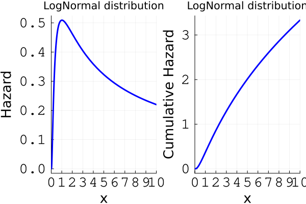
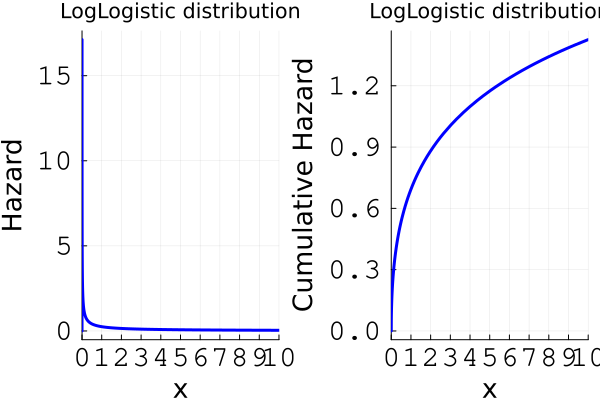
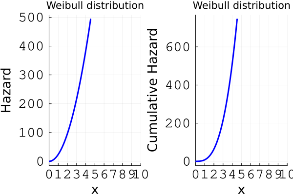
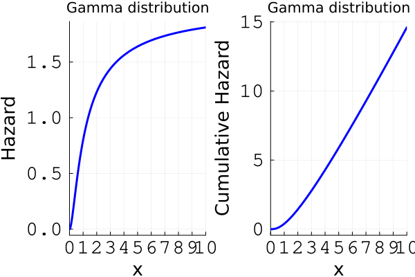

Baseline hazards
The hazard and the cumulative hazard functions play a crucial role in survival analysis. These functions define the likelihood function in the presence of censored observations. Thus, they are important in many contexts. For more information about these functions, see Short course on Parametric Survival Analysis.
In Julia, hazard and cumulative hazard functions can be fetched through the hazard(dist, t) and cumhazard(dist, t) functions from SurvivalDistributions.jl, and can be applied to any distribution compliant with Distributions.jl's API. Note that SurvivalDistributions.jl also contains a few more distributions relevant to survival analysis. See also the (deprecated) HazReg.jl Julia Package.
The baseline hazards commonly used with the model classes (and supported by the simulate function) include:
- Power Generalised Weibull (PGW) distribution.
- Exponentiated Weibull (EW) distribution.
- Generalised Gamma (GenGamma) distribution.
- Gamma (Gamma) distribution.
- Lognormal (LogNormal) distribution.
- Log-logistic (LogLogistic) distribution.
- Weibull (Weibull) distribution (only for AFT, PH, and AH models — see the General Hazard identifiability note).
Here are a few plots of hazard and cumulative-hazard curves for some of these distributions:
using Distributions, Plots, StatsBase, SurvivalDistributions
function hazard_cumhazard_plot(dist, distname; tlims=(0,10))
plt1 = plot(t -> hazard(dist, t),
xlabel = "x", ylabel = "Hazard", title = "$distname distribution",
xlims = tlims, xticks = tlims[1]:1:tlims[2], label = "",
xtickfont = font(16, "Courier"), ytickfont = font(16, "Courier"),
xguidefontsize=18, yguidefontsize=18, linewidth=3,
linecolor = "blue")
plt2 = plot(t -> cumhazard(dist, t),
xlabel = "x", ylabel = "Cumulative Hazard", title = "$distname distribution",
xlims = tlims, xticks = tlims[1]:1:tlims[2], label = "",
xtickfont = font(16, "Courier"), ytickfont = font(16, "Courier"),
xguidefontsize=18, yguidefontsize=18, linewidth=3,
linecolor = "blue")
return plot(plt1, plt2)
endhazard_cumhazard_plot (generic function with 1 method)LogNormal
hazard_cumhazard_plot(LogNormal(0.5, 1), "LogNormal")
LogLogistic
hazard_cumhazard_plot(Distributions.LogLogistic(1, 0.5), "LogLogistic")
Weibull
hazard_cumhazard_plot(Weibull(3, 0.5), "Weibull")
Gamma
hazard_cumhazard_plot(Gamma(3, 0.5), "Gamma")